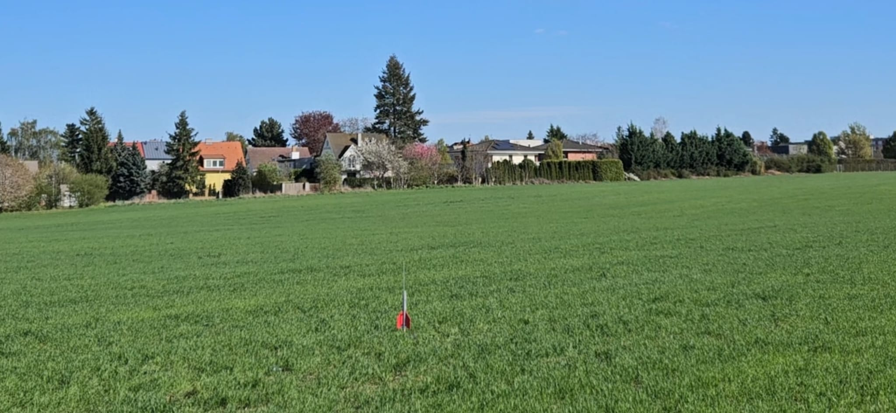

Sledujte nejnovější dění z našich testovacích ploch a laboratoří.

Pražský Suchdol se stal dějištěm očekávaného testu modelu I-5. Ačkoliv systémy hlásily připravenost, příroda nakonec rozhodla jinak. Přečtěte si, proč musel být start v poslední vteřině odložen.